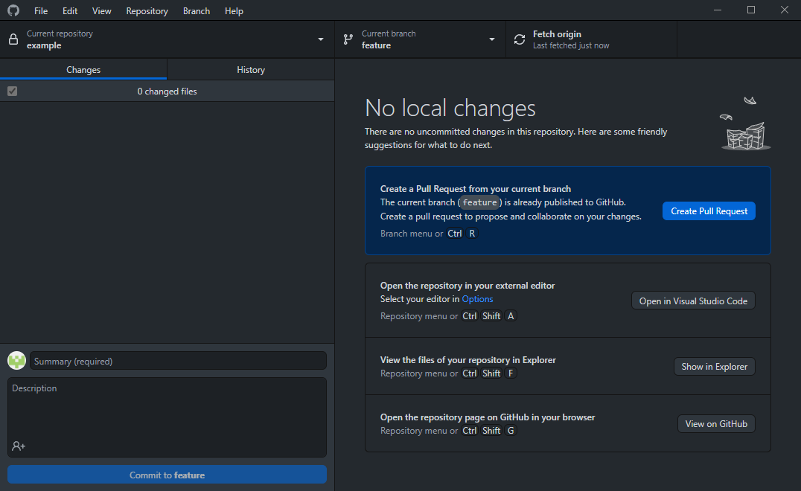

Pull Requests
A way to discuss a group of potential changes to a repository.
Wheres the command?
While Git has the git request-pull command, it is only a way to generate a summary of changes meant to be sent to a mailing list and is thus rarely used. The more common idea of a pull request is something that is not a part of Git itself. Instead, the concept is native to the services that host Git repositories for you, GitHub is a popular example.
Creating a pull request
Before making a pull request, you must first have a branch with changes that aren't on the branch you want to contribute to. The most straight-forward way to do this is to create a branch in the repository for your contributions; however, this requires permissions that you likely won't have on most repositories. An alternative method on GitHub is to Fork a repository with the corresponding button in the top right. This process makes a copy that you can modify and later make a pull request with.
Either way, a pull request can easily be made on GitHub through the "Pull requests" tab on a repository's page, or through the button on the Desktop app, shown here.
{kind=link}
Afterwards
Once a pull request has been made, anyone can comment on the newly created thread to make suggestions, critiques, etc. New commits can be made to the pull request to fix errors or add relavent improvements. Once the requested changes are in a good state, the pull request may be merged in by one of the repository's maintainers.